Blue Light Filter#
If you pass in sunlight through a prism, the light will be spread out into a rainbow. Here, we can see the presence of blue light in sunlight. Blue light contains more energy
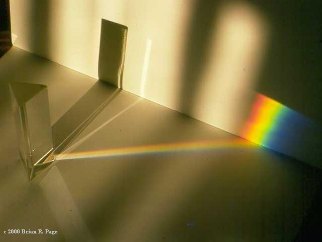than other colors of light. However, as sun is so far away from away from us, the blue light in sunlight is not a concern. However, what is concerning is the blue light emitted from digital screens like smartphone, laptops, etc. As these devices are typically used really close to our eyes, longtime exposure to digital screen can cause eye strain, blurred vision, and headaches due to the emitted blue light.
Blue light can also reduce the production of melatonin, the hormone responsible for making us sleepy. So, using smartphone for hours before going to sleep can make it difficult to fall asleep. Thankfully, most smartphones come with blue light filter these days. Enabling this feature will give the display a brownish tint and reduce the amount of emitted blue light.
On Xiaomi phones, to enable blue light filter, first, go to the Settings menu by either clicking on the gear icon or scrolling down on your home screen and clicking on the top right hand corner.


After opening settings, scroll down until you find the ‘Display’ section. Let’s click on it.
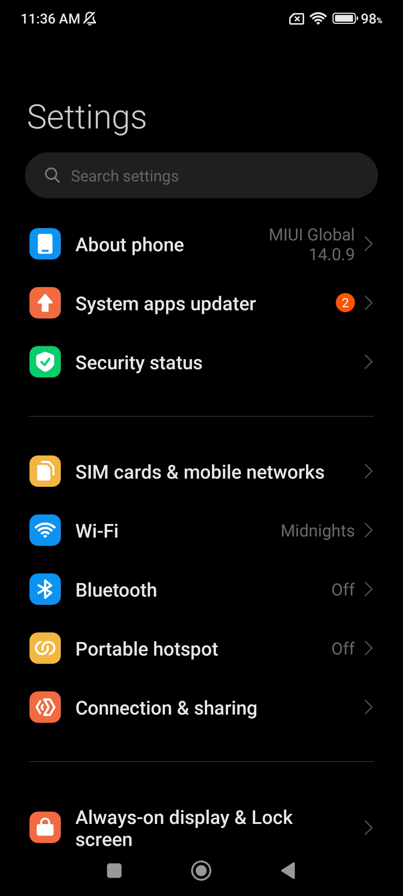 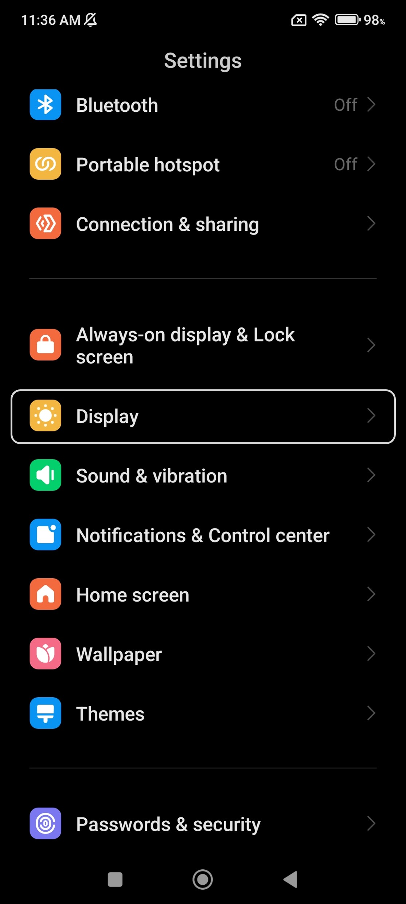Now, you will see a option called ‘Reading Mode’ at the bottom of this new page. Click on it. It will take to this new image shown to the right.
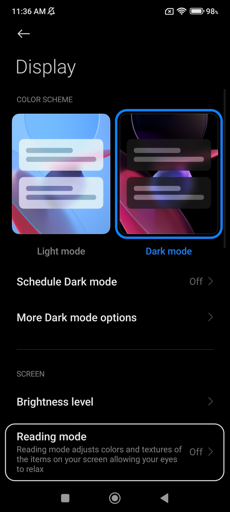 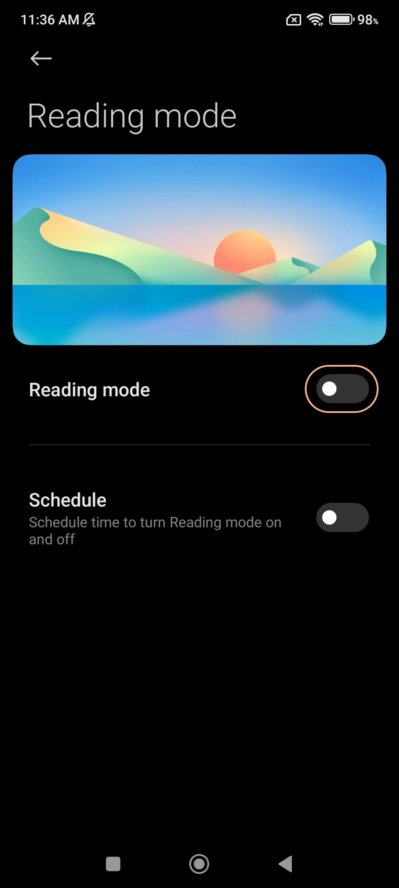Now, click on the toggle to the right of ‘Reading Mode’ to enable blue filter filter. Once this feature is enabled, you will have some customization options.
Classic mode just gives a brownish tint to the screen. If you select ‘Classic’ mode, then you can click on the small arrow button to the right and adjust how much tint you want by adjusting the color temperature slider.
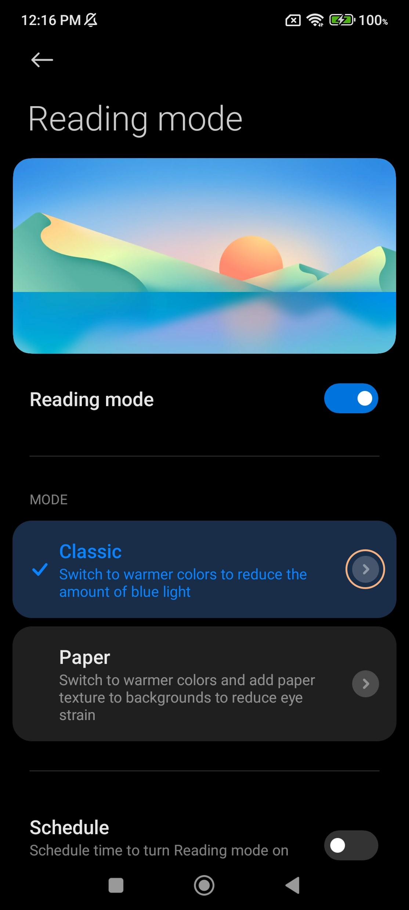 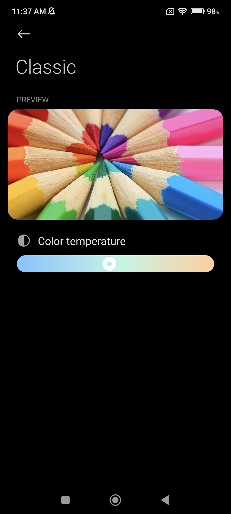The paper mode goes one step father and makes the screen look grainy and also keeps the brownish tint. If you select paper mode, then again, you can click on the small arrow to the right to get more customization options.
In the new page shown to the right, you not only have the option to adjust tint via the temperature slider, but also you can change how much graininess you want by adjusting the texture slider.
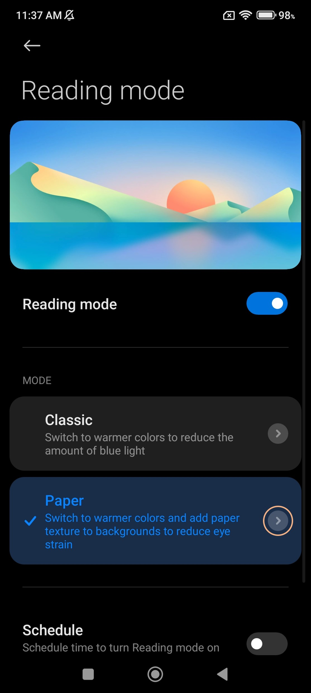 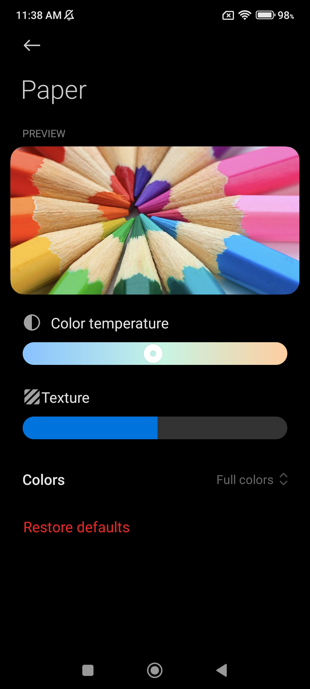We will stick with classic mode for now. Now in the screenshot above to the left, you might see the ‘Schedule’ option at the bottom of the screen. By enabling this feature, you can adjust when the phone should use blue light filter. If it’s set at ‘Good night’s read’, then blue light filter will take into effect at night to reduce eye strain and help you fall asleep. You can also set which time of the day you want to have blue light filter by clicking on the ‘Custom period’ option.

After selecting ‘Custom period’, you can either click on the ‘Turn on’ or ‘Turn off’ tab to configure when the blue light filter should be enabled and disabled respectively. After you click on either one of those, you can set the time and then click on ‘OK’.
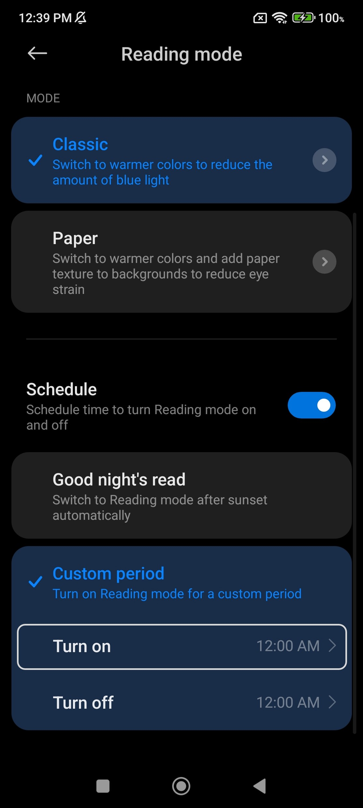 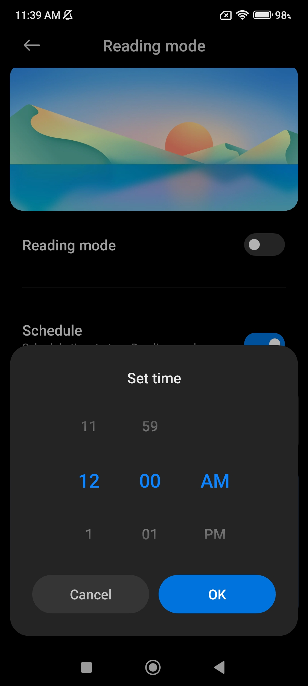There is also a simpler way to enable blue light filter, but in this way you can only turn on or off the blue light filter, you cannot customize how long the filter should be enabled or how much tint you want on the screen. For those configuration, you still have to follow the process we just discussed.
To enable reading mode / blue light filter easily, just scroll down from the top twice, to bring the quick settings menu. Here, you will see the ‘Reading Mode’ option somewhere. If you don’t see it on the first page of quick settings, then swipe to the left to see the second page.
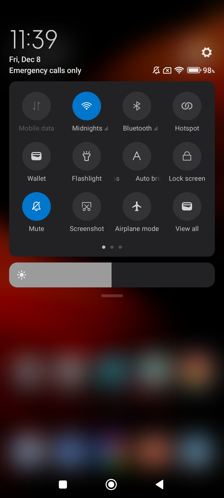 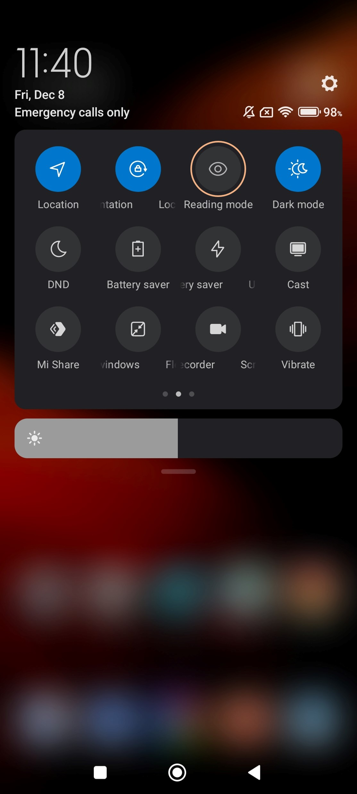On our phone, the reading mode option was on the second page. Now, you can just click on the small circle (marked in orange in the image above) to enable blue light filter.
Congratulations! Now you know all there is to blue light filter. Feel free to explore the settings menu on your phone to discover more interesting features.
'